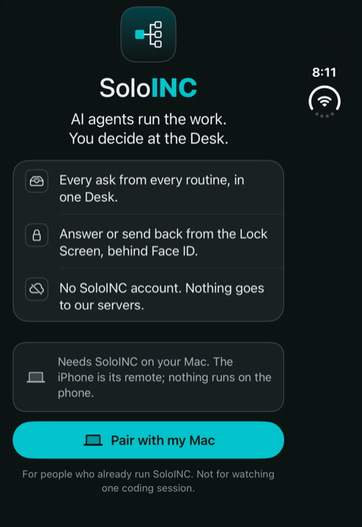
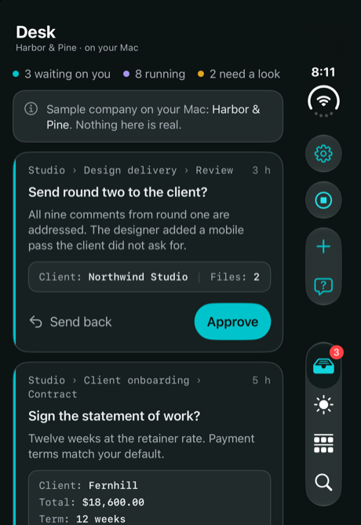
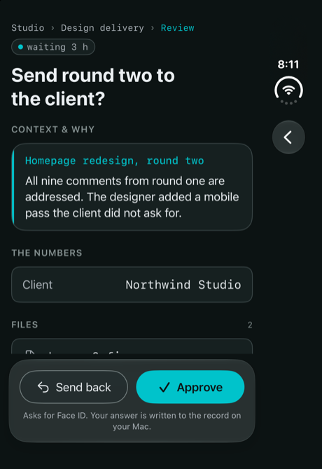
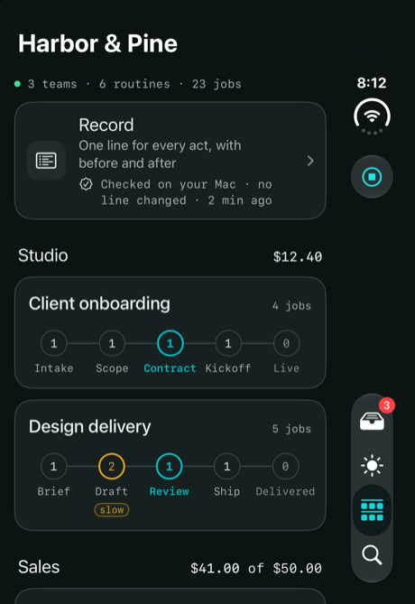
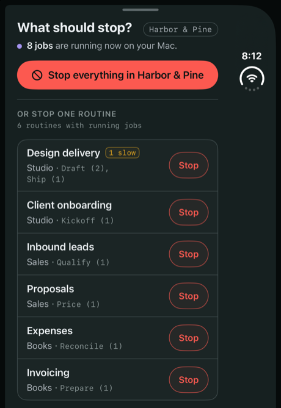

Answer your agents from the Lock Screen.
SoloINC for iPhone is the Desk in your pocket, paired to SoloINC on your Mac. AI agents run the work. You decide at the Desk.
- Download on the App Store · opens soon
For iPhone, iOS 18 or later. Needs SoloINC on your Mac, a free download: the iPhone is its remote, and nothing runs on the phone.
Answer from the Lock Screen
An ask arrives as a notification with its own answers and Send back. Face ID confirms it, this iPhone's own key signs it, and the answer is written to the record on your Mac, the same as one given there.
Stop everything
Stop the whole company, or one routine, from the Desk or from a control in Control Center. The iPhone shows your Mac's own answer once it has stopped, and you can start again.
A record you can check
One line for every act, with who did it and the value before and after. Your Mac checks that every line links to the one before, and the app shows when it last checked.
What it looks like

The first screen

The Desk: every ask from every routine

A memo, with context and why

Company, with the Record's check

Stop everything, or one routine
Pictures from the design, showing the sample company Harbor & Pine as a Mac sends it. Nothing in it is real.
Who it is for, and not for
- For people who already run their company on SoloINC on a Mac.
- It does not watch a single coding session or route incidents.
- It does nothing without your Mac: when the Mac is out of reach it shows the last copy with its age, and every action is off until the Mac is back.
- While the app is closed it checks for new asks at most every 15 minutes, when iOS allows, so an ask can reach you late.
- Free, and it sells nothing: your SoloINC on the Mac holds the plan.
Privacy in one line: no SoloINC account, nothing sent to our servers, no analytics, no ads, no tracking; the iPhone talks only to your Mac. Read the privacy policy.